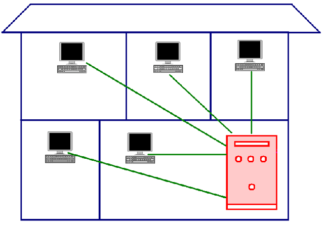
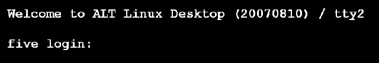
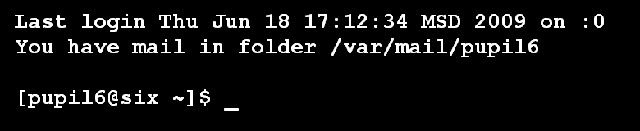
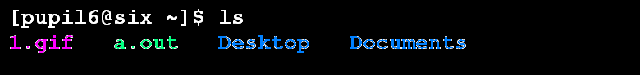
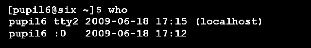
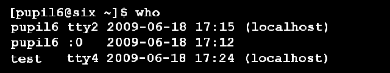
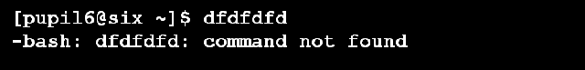

1 Консоль и терминал
Термины "консоль" и "терминал" связаны с историческим развитием компьютерной техники и близки по смыслу. Грубо говоря, оба понятия обозначают точку доступа человека к ресурсам компьютера, с той лишь разницей, что консоль находится непосредственно рядом с компьютером, а терминал на удаленном расстоянии. В настоящее время, в связи с повсеместным распространением персональных компьютеров, терминальный доступ не распространен. Несмотря на это, в операционных системах на базе ядра Linux (возможно и в других) реализована эмуляция (подобие) нескольких терминалов. И это не только дань истории, в большей степени в этом есть практическое значение.
В Linux терминал обеспечивает доступ к специальной программе — командной оболочке (чаще всего bash). Она занимается интерпретацией (переводом на машинный язык) команд пользователя. Почему "оболочка"? Наверное потому, что она как бы обволакивает операционную систему, позволяя человеку не вдаваться в подробности реализации функций системы, и, тем самым, облегчает работу.
Итак, через терминал (или консоль) мы получаем доступ к командной оболочке.
В операционной системе Linux работать с командной оболочкой можно двумя способами: в графическом режиме и текстовом.
Запустить эмулятор терминала в среде KDE (часто тут употребляют название "консоль") можно через главное меню. Для работы в текстовом режиме следует выполнить комбинацию клавиш Ctrl+Alt+F1 (или Ctrl+Alt+F2, или Ctrl+Alt+F3, или Ctrl+Alt+F4, или Ctrl+Alt+F5, или Ctrl+Alt+F6). Комбинация клавиш Ctrl+Alt+F7 переключает экран в графический режим. Другими словами, в Linux эмулируется семь терминалов.
2 Работа с нескольких терминалах и вход в систему
Когда операционная система (Linux) загружена, то работать с ней могут только люди, с которыми система "знакома". Для начала работы человеку нужно войти в систему ("сказать" ей кто он и подтвердить, что это действительно он).
В графическом режиме мы обычно видим красочное окно для входа (хотя говорят, что лазить в окна плохо, поэтому возможно - это дверь), в которое вводим свой логин (электронное имя) и пароль (электронный паспорт, удостоверяющий личность). Теперь, если мы захотим работать с командной оболочкой в графическом режиме, то запустим программу под названием "Консоль" (возможно в названии будет значиться слово "Терминал") и сразу увидим так называемое приглашение оболочки.
Если же мы переключаемся в текстовый режим работы (например, нажав Ctrl+Alt+F3), то первое, что мы увидим будет далеко не приглашение, а текстовое требование на ввод логина и пароля. Зачем, ведь мы уже вошли?! Вспомним, что Linux эмулирует работу нескольких терминалов, а терминал с древних времен — это удаленная точка входа (кстати, мобильник - это тоже терминал доступа, только к другой системе). Можно представить, что мы не нажимали Ctrl+Alt+F3, а пошли пообщаться в другое помещение, но так и остались там. Однако работа не дремлет, поэтому пришлось сесть за тамошний терминал (клавиатура+монитор), соединенный с нашим компьютером. Как операционная система должна определить, что это вы вернулись, а не сел другой человек (возможно с неадекватными целями). Системе ничего не остается как снова спросить логин и пароль. Конечно, установка в здании множества терминалов, чтобы кому-то там было удобно работать с компьютером из любой точки — бред (особенно для 70-x годов XX века). Множество терминалов было вынужденной мерой того времени, т. к. компьютер нужен был многим, но стоил он очень дорого и был слишком громоздким. Поэтому доступ множества людей к одному ресурсу через терминалы был выходом, т. к. создавалось впечатление что у каждого есть свой компьютер. Говорят, что некоторые граждане роняли фразы типа "Опять монитор повис!"; возможно они думали, что все вычисления творятся в мониторе (ну не в клавиатуре же).

Теперь обратим внимание на следующее: с компьютером работают разные люди одновременно. У каждого есть свой логин и пароль, каждый запускает свои программы и процессы. (Если бы все входили с одного логина, то это создало бы проблемы с безопасностью.) Это важно: операционная система поддерживает многопользовательский режим работы с компьютером, кроме того создается впечатление, что процессор выполняет множество разных задач параллельно (одновременно).
Хотя терминалы сейчас заменены персональными компьютерами, в операционной системе (Linux) наличие нескольких терминалов может иметь практическое значение. Например, человек работает в одном виртуальном терминале, а параллельно в другом запущен процесс архивации данных (хотя можно делать все в одном, но иногда работа в нескольких терминалах бывает удобней — так легче следить за тем, что происходит).
Итак, вернемся к тому с чего начали. Переключившись в текстовый режим мы увидим приблизительно следующее: приветствие, название дистрибутива, дата его выпуска, текущий терминал (tty2). Во второй строке — имя компьютера в сети (в данном случае five) и предложение ввести логин.

Следует снова ввести логин и пароль. Ввод пароля не отображается (в целях безопасности). Далее вы должны увидеть что-то вроде этого:

В первой строке сообщается когда и где был последний вход (в данном случае с терминала ":0" - это графический режим). Во второй строке — сообщение о том, что пользователь имеет письмо в папке /var/mail/pupil6. Далее — приглашение командной оболочки.
3 Структура приглашения и текущий каталог
[pupil6@six ~]$ - это приглашение командной оболочки. Но это не просто "здрасьте", оно несет в себе информацию об имени пользователя (pupil6), имени компьютера (six) и текущем каталоге (~). Тильда (~) обозначает домашний каталог.
Еcли на том же компьютере зайдет другой пользователь, то изменится первая строка (до знака @), при работе на другом компьютере изменится также строка после @. А если поменять текущий каталог, то знак тильды будет заменен на имя нового текущего каталога. Примеры приглашений командной оболочки: [test@six Documents]$, [YaKreveDko@five ~]$ и т. д.
Текущий каталог — это каталог, в котором мы как бы находимся.
4 Примеры простейших команд
Какие же команды существуют? Для чего они и как их отдавать? Команд множество, они позволяют выполнить прикладные задачи (получать информацию, работать с текстом, программировать и др.), управлять операционной системой и компьютером (железом).
Чтобы выполнить команду ее надо записать после приглашения и нажать Enter. Например, если захочется узнать, сколько времени, то следует записать слово date (от англ. "дата") и нажать Enter. В итоге получим сообщение о сегодняшней дате и текущем времени.

ls выдает содержимое текущего каталога (т. е. список файлов и папок каталога, в котором мы находимся).

Команда who выдает список находящихся в системе пользователей.

В данном случае в системе работает один пользователь, но с двух терминалов (tty2 и :0). А вот в примере ниже уже два пользователя (test и pupil6).

date, ls и who - это примеры очень простых команд. На самом деле большинство команд состоят не из одного слова, а имеют параметры. Пока оставим это до следующего урока.
Еще один момент. Если написать строку, которая не является командой, то оболочка сообщит, что "команда не найдена".

5 Практическая работа
- Зайдите в операционную систему в графическом режиме, затем с двух терминалов, работающих в текстовом режиме.
- Выясните сколько пользователей работают в системе и где.
- Узнайте содержимое текущего каталога, работая в текстовом режиме. Переключитесь в графический режим и удостоверьтесь в правильности ответа командной оболочки.
- Дайте команду date два-три раза с небольшим перерывом между вызовами. Отметьте изменение времени.
- Спросите у оболочки чая (tea). Что она вам ответит?
6 Вопросы
- Что такое терминал?
- Сколько терминалов эмулируется в Linux? Какие комбинации клавиш позволяют переключаться из одного терминала в другой?
- Может ли один человек работать с двух терминалов?
- Могут ли два человека одновременно работать с одного терминала?
- Могут ли два человека одновременно работать с двух терминалов?
- Как получить доступ к командной оболочке? Зачем к ней получать доступ?
- Какие команды оболочки bash вы знаете?